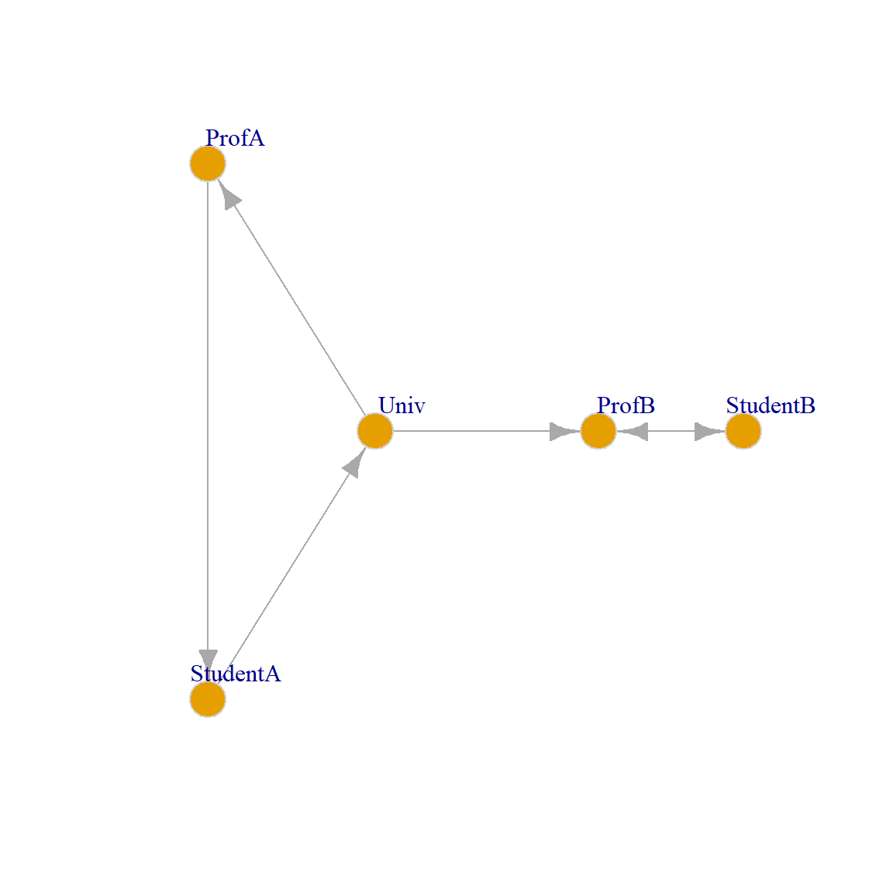
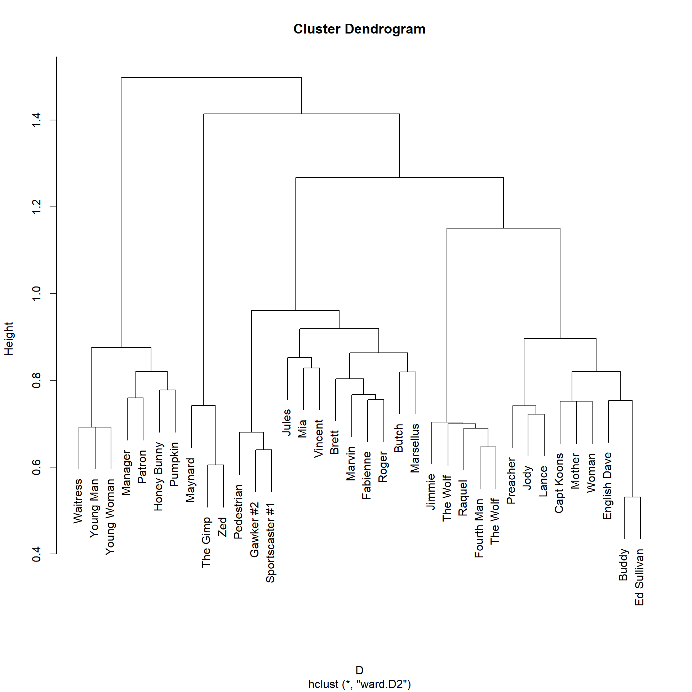
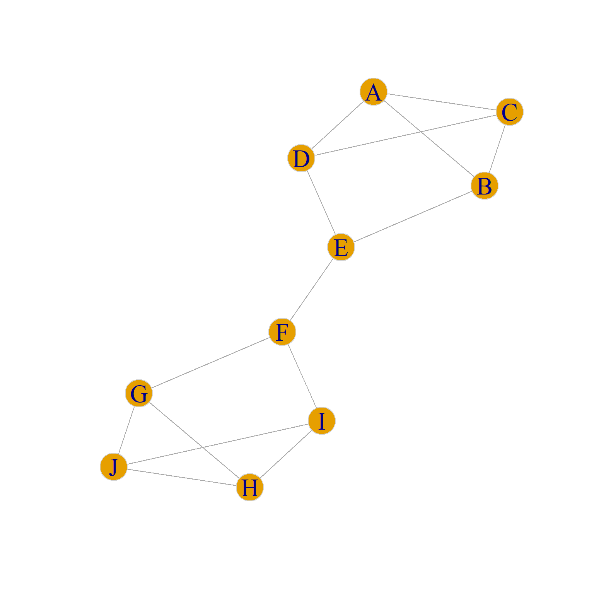
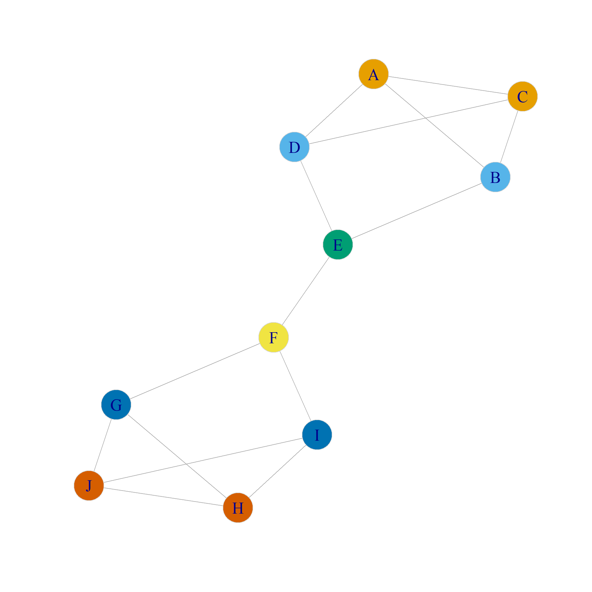
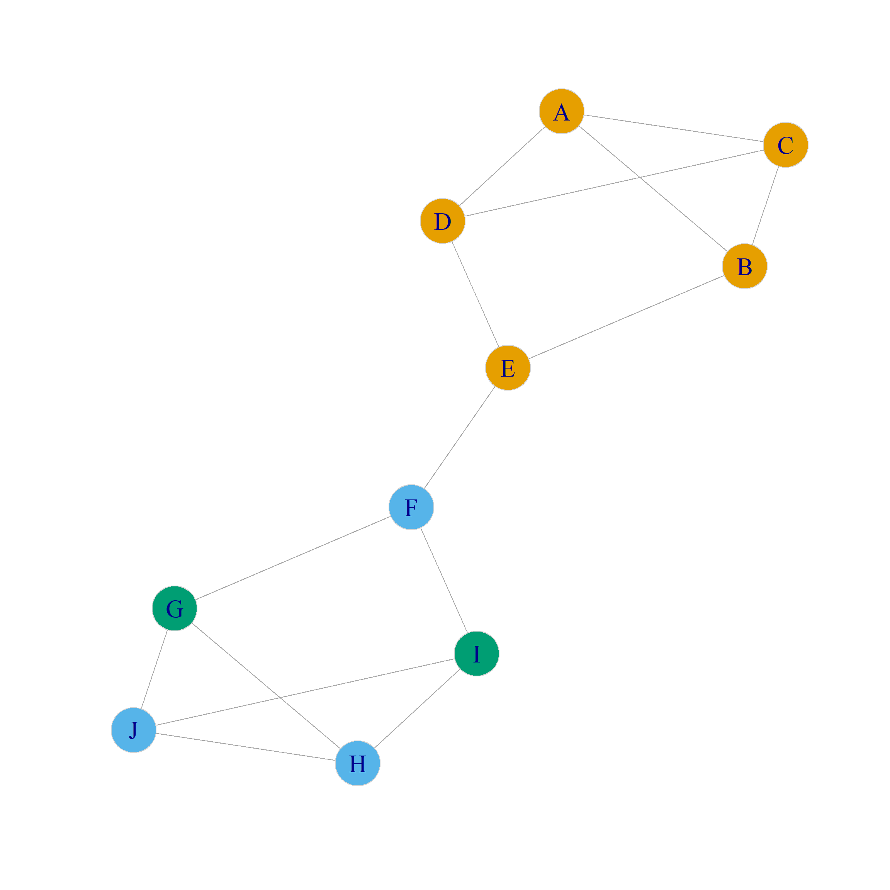
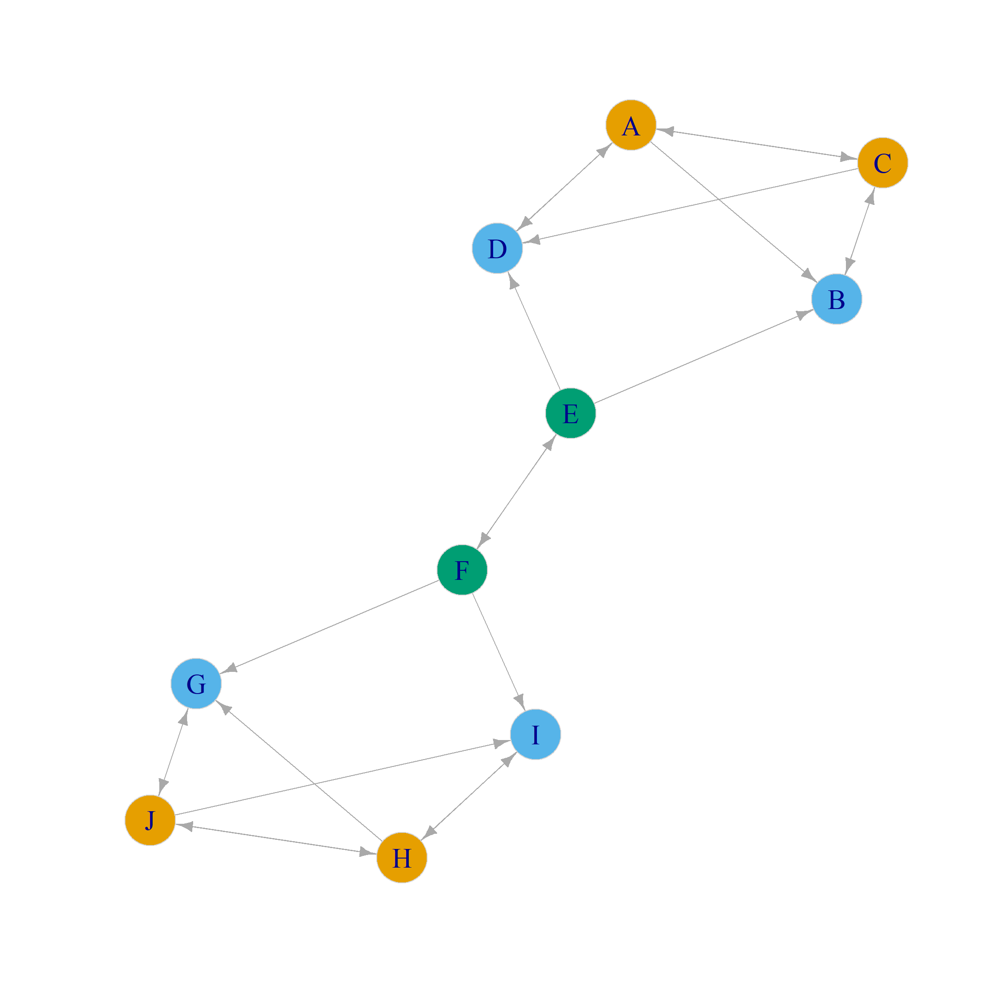
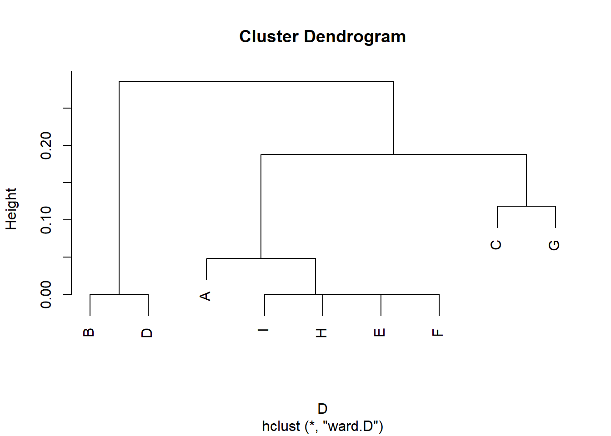

SimRank <- function(w, alpha = 0.8) {
d <- colSums(w) #indegree vector
n <- nrow(w) #number of nodes in the graph
z <- diag(1, n, n) #diagonal matrix (nodes are maximally similar to themselves)
if(is.null(rownames(w)) == TRUE) {rownames(w) <- 1:nrow(w)} #checking if matrix has row names
if(is.null(colnames(w)) == TRUE) {colnames(w) <- 1:nrow(w)} #checking if matrix has column names
rownames(z) <- rownames(w) #naming similarity matrix rows
colnames(z) <- colnames(w) #naming similarity matrix columns
nei <- apply(w, 2, function(x){which(x == 1)}) #in-neighbors list
delta <- 1
while(delta > 1e-10) { #run while delta is bigger than a tiny number
z.o <- z #old similarity matrix at t-1
for(i in 1:n) {
for(j in 1:n) {
if (i != j) {
sigma <- 0 #initialize ij sum for iteration t
for (k in nei[[i]]) { #loop through i's neighbors
for (l in nei[[j]]) { #loop through j's neighbors
sigma <- sigma + z[k, l] #i's similarity to j is equal to sum of neighbors' similarity
} #end l for loop
} #end k for loop
z[i,j] <- alpha/(d[i] * d[j]) * sigma #updating ij similarity score at t
} #end if
} #end j for loop
} #end i for loop
delta <- abs(sum(abs(z)) - sum(abs(z.o))) #difference between similarity matrices at t and t-1
} #end while loop
return(z) #return similarity matrix after convergence
} #end functionSimRank
So far, we have defined distances and similarities mainly as a function of the number of shared neighbors between two nodes. Structural equivalence is an idealized version of this, obtaining whenever people share exactly the same set of neighbors.
Yet, similarities based on local neighborhood information only have been criticized (e.g., by Borgatti and Everett (1992)) for not quite capturing the sociological intuition behind the idea of a role which is usually what they are deployed for.
That is, two doctors don’t occupy the same role because they treat the same set of patients (in fact, this would be weird); instead, the set of doctors occupy the same role to the extent they treat a set of actors in the same (or similar) role: Namely, patients, regardless of whether those actors are literally the same or not. Note that all the similarity notions studied in the local similarity lecture have structural equivalence as the limiting case of maximum similarity. So they are still based on the idea that nodes are similar to the extent they connect to the same others.
This worry led social network analysts to try to generalize the concept of structural equivalence using less stringent algebraic definition, resulting in something of a proliferation of different equivalences such as automorphic or regular equivalence (Borgatti and Everett 1992). Unfortunately, none of this work led (unlike the work on structural equivalence) to useful or actionable tools for data analysis, with some even concluding that some definitions of equivalence (like regular equivalence) are unlikely to be found in any interesting substantive setting.
A better approach here is to use the more relaxed notion of similarity to come up with a more general definition that can capture our role-based intuitions. One strategy is to define similarity in a more “generalized” way as follows: nodes are similar to the extent they connect to similar others, with the restriction that we can only use endogenous (structural connectivity) information—like with structural equivalence or common-neighbor approaches—to define everyone’s similarity (no exogenous attribute stuff).
Jeh and Widom’s SimRank
As Jeh and Widom (2002) note, this approach does lead to a coherent generalization of the idea of similarity for nodes in graphs because we can just define similarity recursively and iterate through the graph until the similarity scores stop changing.1
More specifically, they propose to measure the similarity between two nodes \(i\) and \(j\) at each iteration-step \(t\) (\(s_{ij}(t)\)) using the formula:
\[ s_{ij}(t) = \frac{\alpha}{d_i d_j} \sum_{k \in N(i)} \sum_{l \in N(j)} s_{kl}(t-1) \tag{1}\]
So the similarity between two nodes at step \(t\) is just the sum of the pairwise similarities between each of their neighbors (computed in the previous step, \(t-1\)), weighted by the ratio of a free parameter \(\alpha\) (a number between zero and one) to the product of their in-degrees (to take a weighted average).
This measure nicely captures the idea that nodes are similar to the extent they are both connected to people who are themselves similar. Note that it doesn’t matter whether these in-neighbors are shared between the two nodes (the summation occurs over each pair of nodes formed by crossing the set \(p\) + \(q\) against \(p\) + \(r\) as defined in the local similarity lecture), whether they are themselves neighbors, which deals with the doctor/patient problem we referred to earlier.
A function that implements this idea looks like:
This function takes an adjacency matrix as input (w) and returns a generalized similarity matrix between nodes (z) as output.
Let us see how it works using the toy example that Jeh and Widom (2002, 540, Figure 2) used in their original paper, shown in Figure 1, which is supposed to be a set of web pages in an university. There is a link from the main University page to that of the two professors, and a link from the professor to the student pages. In addition, “Student B” has a link on their webpage to the corresponding professor, and “Student A” has a link on their webpage to the main university page.

We can now test the SimRank function on the toy example:
Univ ProfA ProfB StudentA StudentB
Univ 1.000 0.000 0.132 0.000 0.034
ProfA 0.000 1.000 0.414 0.000 0.106
ProfB 0.132 0.414 1.000 0.042 0.088
StudentA 0.000 0.000 0.042 1.000 0.331
StudentB 0.034 0.106 0.088 0.331 1.000Which reproduces the pairwise similarity numbers reported by Jeh and Widom (2002, 540, Figure 2) in their original paper.
We can transform the similarity matrix into a distance matrix and then perform a hierarchical clustering to obtain the roles:

Which, as we can see, recovers the Professor, Student, and University Roles in the network.
Let’s try it out on more realistic data using the Pulp Fiction graph:
library(networkdata)
library(stringr) #using stringr to change names from all caps to title case
g <- movie_559
V(g)$name <- str_to_title(V(g)$name)
V(g)$name[which(V(g)$name == "Esmarelda")] <- "Esmeralda" #fixing misspelled name
V(g)$name[which(V(g)$name == "Winston")] <- "The Wolf" #renaming same character
g <- delete_vertices(g, degree(g) < 2) #deleting low degree vertices
A <- as.matrix(as_adjacency_matrix(g))
S <- SimRank(A)
round(S[1:5, 1:5], 2) Brett Buddy Butch Capt Koons Ed Sullivan
Brett 1.00 0.17 0.17 0.17 0.17
Buddy 0.17 1.00 0.17 0.27 0.47
Butch 0.17 0.17 1.00 0.17 0.17
Capt Koons 0.17 0.27 0.17 1.00 0.27
Ed Sullivan 0.17 0.47 0.17 0.27 1.00We can transform the generalized similarities to distances and plot:
D <- as.dist(1- S)
h.res.pulp1 <- hclust(D, method = "ward.D2") #hierarchical clustering
plot(h.res.pulp1)
Note that the lowest levels of the dendrogram hierarchy some of the pairings make a lot of sense: The Gimp is most similar to Zed, Pumpkin is most similar to Honey Bunny (and other characters in the diner scene), Jimmie is most similar ot the Wolf, and Jules, Marsellus, Butch, Mia, and Vincent (the main characters) are most similar to one another.
The plot suggests a division into five major node clusters. We can obtain that as follows using the cutree function:
We can see that the people in the diner scene all end up in the same cluster (4) which makes sense, as do Maynard, Zed, and the Gimp (5) which also makes sense. The main characters also end up in the same generalized similarity cluster (1), suggesting they play a similar role in the story.
A more general (and shorter) version of the function to compute SimRank looks like this (partly based on Fouss, Saerens, and Shimbo 2016, 84, algorithm 2.4):
SimRank2 <- function(w, alpha = 0.85) {
n <- nrow(w) #number of nodes
d <- as.numeric(colSums(w) > 0) #degree vector
e <- matrix(1, n, 1) #all ones column vector
q <- diag(as.vector(t(e) %*% w), n, n) #q matrix
diag(q) <- 1/diag(q) #setting q diagonals to inverse
q <- w %*% q
q[is.nan(q)] <- 0
delta <- 1
k <- diag(1, n, n)
while(delta > 1e-10) {
k.o <- k
k.p <- alpha * t(q) %*% k %*% q
k <- k.p - diag(diag(k.p), n, n) + diag(d, n, n)
delta <- abs(sum(abs(k)) - sum(abs(k.o)))
}
rownames(k) <- rownames(w)
colnames(k) <- colnames(w)
return(k)
}Does SimRank Escape the Role Problem?
Recall that we turned to SimRank because it promised to solve Borgatti and Everett’s (1992) role problem, or the idea that nodes can play the same role in the network even when they don’t share any neighbors.
Now, we know from Equation 1 that SimRank uses information on the neighborhoods of the two nodes, but relaxes the local structural similarity assumption that these neighbors need to be shared.
However, it is clear that nodes that have completely disjoint neighborhoods would be considered by SimRank to be low similarity even though they could be playing the same roles. So maybe SimRank doesn’t solve the doctor/patient problem after all.
library(igraph)
g <- make_empty_graph(10, directed = FALSE)
V(g)$name <- LETTERS[1:10]
g <- g + edge("A","B")
g <- g + edge("A","C")
g <- g + edge("A","D")
g <- g + edge("B","C")
g <- g + edge("B","E")
g <- g + edge("C","D")
g <- g + edge("D","E")
g <- g + edge("E","F")
g <- g + edge("F","G")
g <- g + edge("F","I")
g <- g + edge("G","H")
g <- g + edge("G","J")
g <- g + edge("H","I")
g <- g + edge("H","J")
g <- g + edge("I","J")
A <- as.matrix(as_adjacency_matrix(g))
plot(g,
vertex.size=14, vertex.frame.color="lightgray",
vertex.label = V(g)$name, edge.arrow.size = 1,
layout = layout.kamada.kawai, vertex.label.cex = 2)
To build some intuition, consider the graph in Figure 2, which is a toy example taken from Borgatti and Everett (1992, 14, Figure 7 (a)). This is a regular graph of order three (each node has the same degree and that degree happens to be three). Going by the standard of structural equivalence (see here) we would say that that set of structurally equivalent nodes are {J, H}, {G, I}, {D, B}, and {A, C} because each pair in brackets has identical neighborhoods.
We can ascertain this by reviving our old Euclidean distance function:
d.euclid <- function(x) {
n <- nrow(x)
E <- matrix(0, n, n)
for (i in 1:n) {
for (j in 1:n) {
if (i < j & i != j) {
d.ij <- 0
for (k in 1:n) {
if (k != i & k != j) {
d.ij <- d.ij + (A[i,k] - A[j,k])^2
}
}
E[i,j] <- sqrt(d.ij)
E[j,i] <- sqrt(d.ij)
}
}
}
rownames(E) <- rownames(A)
colnames(E) <- colnames(A)
return(E)
}And then using it to cluster the nodes into six structurally equivalent classes, using the igraph plotting argument vertex.color to color the nodes according to the grouping returned by the cutree function applied to the hclust result:
E <- d.euclid(A)
E <- as.dist(E) #transforming E to a dist object
h.res <- hclust(E, method = "ward.D2")
blocks <- cutree(h.res, k = 6)
plot(g,
vertex.size=14, vertex.frame.color="lightgray",
vertex.label = V(g)$name, edge.arrow.size = 1,
layout = layout.kamada.kawai, vertex.label.cex = 2,
vertex.color = blocks
)
We can see that indeed, the good old Euclidean distance finds the set of structurally equivalent nodes in the graph.
Yet, going by our intuitive idea that two nodes occupy the same position if they are structurally similar (regardless of whether they share the same set of neighbors) we want to say that nodes {J, H, A, C} occupy the same role, as do nodes {G, I, D, B} and nodes {E, F}. So going by this abstract idea of role, we would expect there to be three role positions in the graph, not six like suggested by the structural equivalence approach.
However, standard approaches to structural equivalence like the Euclidean distance shown in Figure 3, will not capture these higher level similarities, they will only capture the lower-level similarity based on local neighborhood overlap that the algorithms for structural equivalence are designed to extract.
Can SimRank do better? Let’s see:
S <- SimRank(A)
D <- as.dist(1-S)
h.res <- hclust(D, method = "ward.D2")
blocks <- cutree(h.res, k = 3)
plot(g,
vertex.size=14, vertex.frame.color="lightgray",
vertex.label = V(g)$name, edge.arrow.size = 1,
layout = layout.kamada.kawai, vertex.label.cex = 2,
vertex.color = blocks
)
We can see that SimRank does not discover the more general role groups in the Borgatti-Everett graph. Instead, it assigns {A, B, E, F, H} to a large similarity cluster and then assigns {D, G, J} and {I, C} to smaller clusters. So the good news is that SimRank does assign nodes to the same cluster even when they share no neighbors (like {C} and {I}) but the bad news is that this is not the assignment that makes sense for what we are looking for.
CentSim
But don’t despair. Li et al. (2015) provide an ingenious and relatively simple solution to the problem. Their key observation is that nodes like {J, H, A, C} in Figure 2 are automorphically equivalent (see Borgatti and Everett (1992) for relevant discussion).
While automorphic equivalence is a terrible name coming from the depths of graph theory, it has a simple explanation. Two nodes are automorphically equivalent just in case we could swap the labels of any pair (e.g., J for A and A for J) in the relevant set in Figure 2 and nothing would change in the graph. That is, every graph theoretic property and quantity we could compute in the graph would remain the same (density, average shortest path length, diameter, etc.).
The same goes for any quantity we can compute at the node level, which means that automorphically equivalent nodes have the property of being graph-theoretically indistinguishable. That means that they will have the same score on any centrality measure we could compute on them.
Li et al. (2015) build on this observation to compute a role similarity measure called CentSim on each pair of nodes in the graph, by comparing their centrality scores across various measures. Li et al.’s (2015) proposal is that the similarity between \(i\) and \(j\) is given by:
\[ s_{ij} = \frac{\sum_{k=1}^l \theta_k(i,j)}{l} \tag{2}\]
Where the function \(\theta_k\) defined on each pair of nodes \(i\), \(j\), is given by:
\[ \theta_k(i,j) = \frac{min\left[c_k(i), c_k(j)\right]}{max\left[c_k(i), c_k(j)\right]} \tag{3}\]
Where \(c_k(i)\) is the \(k^{th}\) centrality score computed on node \(i\).
So the idea is to compute a bunch of different centrality scores on each node and the compute the average ratio between the minimum and the maximum scores for each pair.
Here’s a function that does that, using degree, closeness, betweenness and eigenvector centrality:
cent.sim <- function(x) {
library(igraph)
c1 <- degree(x)
c2 <- closeness(x)
c3 <- betweenness(x)
c4 <- eigen_centrality(x)$vector
n <- vcount(x)
min.max <- function(g, h) {
if (max(g, h) != 0) {r <- min(g, h)/max(g, h)}
else {r <- 1}
return(r)
}
z <- diag(1, n, n)
rownames(z) <- V(x)$name
colnames(z) <- V(x)$name
for(i in 1:n) {
for(j in i:n) {
w1 <- min.max(c1[i], c1[j])
w2 <- min.max(c2[i], c2[j])
w3 <- min.max(c3[i], c3[j])
w4 <- min.max(c4[i], c4[j])
z[i,j] <- (w1 + w2 + w3 + w4)/4
}
}
z[lower.tri(z)] <- t(z)[lower.tri(z)] #copying upper triangle into lower triangle
return(z)
}The cent.sim function takes an igraph graph object as input and returns a similarity matrix z as output.
Can CentSim find the automorphically equivalent classes in Figure 2 that we are looking for? Let’s find out:
S <- cent.sim(g)
D <- as.dist(1-S)
h.res <- hclust(D, method = "ward.D") #hierarchical clustering
blocks <- cutree(h.res, k = 3)
plot(g,
vertex.size=14, vertex.frame.color="lightgray",
vertex.label = V(g)$name, edge.arrow.size = 1,
layout = layout.kamada.kawai, vertex.label.cex = 2,
vertex.color = blocks)
Indeed it does! Nodes {A, C, J, H} are put in the same class, as are nodes {B, D, G, I} and {E, F}.
Let’s see how it works on the Pulp Fiction data:
g <- movie_559
V(g)$name <- str_to_title(V(g)$name)
V(g)$name[which(V(g)$name == "Esmarelda")] <- "Esmeralda" #fixing misspelled name
g <- delete_vertices(g, degree(g) < 2) #deleting low degree vertices
S <- cent.sim(g)
D <- as.dist(1-S)
h.res.pulp2 <- hclust(D, method = "ward.D") #hierarchical clustering
plot(h.res.pulp2)
We can see that the CentSim partition is not too far off from that offered by SimRank providing a more fine-grained but also more intuitive set of clusters. The three main characters in the story {Vincent, Butch, Jules} are assigned to the same cluster. Lower down, we see similar node pairs that make sense like {Pumpkin, Honey Bunny}, {Capt Koons, Mother}, {The Gimp, Zed}, and {Jimmie, The Wolf}
References
Borgatti, Stephen P, and Martin G Everett. 1992. “Notions of Position in Social Network Analysis.” Sociological Methodology 22: 1–35.
Fouss, François, Marco Saerens, and Masashi Shimbo. 2016. Algorithms and Models for Network Data and Link Analysis. Cambridge University Press.
Jeh, Glen, and Jennifer Widom. 2002. “Simrank: A Measure of Structural-Context Similarity.” In Proceedings of the Eighth ACM SIGKDD International Conference on Knowledge Discovery and Data Mining, 538–43.
Li, Longjie, Lvjian Qian, Victor E. Lee, Mingwei Leng, Mei Chen, and Xiaoyun Chen. 2015. “Fast and Accurate Computation of Role Similarity via Vertex Centrality.” In Web-Age Information Management, edited by Xin Luna Dong, Xiaohui Yu, Jian Li, and Yizhou Sun, 123–34. Springer International Publishing.
Footnotes
Note the similarity (heh, heh) between this idea and the various status ranking algorithms for computing prestige scores.↩︎